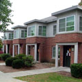

|  |
New Townhouses Close
Built in 1865
Office of the current College President |
The New Townhouses were built in 1993 and accommodate 144 junior and senior students in six buildings overlooking the Hudson River. Each building has a number of units with space for eight students, including living, dining, and lounging areas. The complex has its own central laundry facility. Some units are available to accommodate qualified, physical handicapped students.